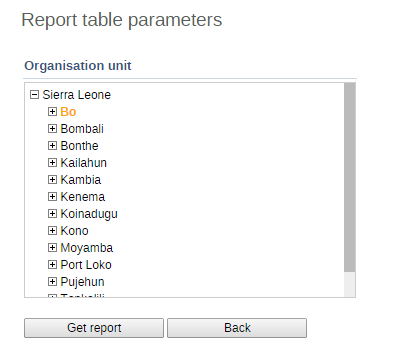

Report tables are a simple-to-use tool for creating tabular analysis. To run a report table first navigate to the list of available report tables in Services->Reports->Report Tables and then the name of the report table you wish to use. Select "Create" from the contextual menu. If the report table has any pre-defined paramaters, you will need to select them in the next screen. Finally, press "Get report" to view the report table.
Report parameters: Most report tables have parameters, which means that you can filter which orgunits and/or periods you want in the report. This makes the reports much more reusable. When you run the report table a Report parameter window will open and ask the user to input values for the selected parameters. The possible parameters are Reporting Month and Organisation Unit, and either one of these or both will show in the window. After selecting the values click on the Get Report button.
|  |
Export/view options: When the report table is ready it will be displayed in a HTML view. The report table can be exported to PDF (for better printing and easier saving), Excel, CSV, and also to a standard report format (Jasper) with a nicer table and a chart shown in PDF, or as a Jasper design file (JRXML) for further improvements and changes to the report design before uploading it as a standard report (see the Creating standard reports section in the Developers Guide for more detail information).
 |
You can also share a comment or intepretation about this report table from the report table view, by simply writing a comment in the box and pressing "Share".